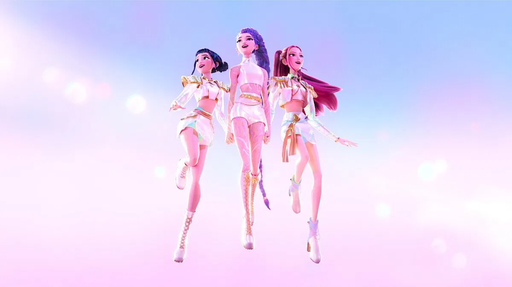
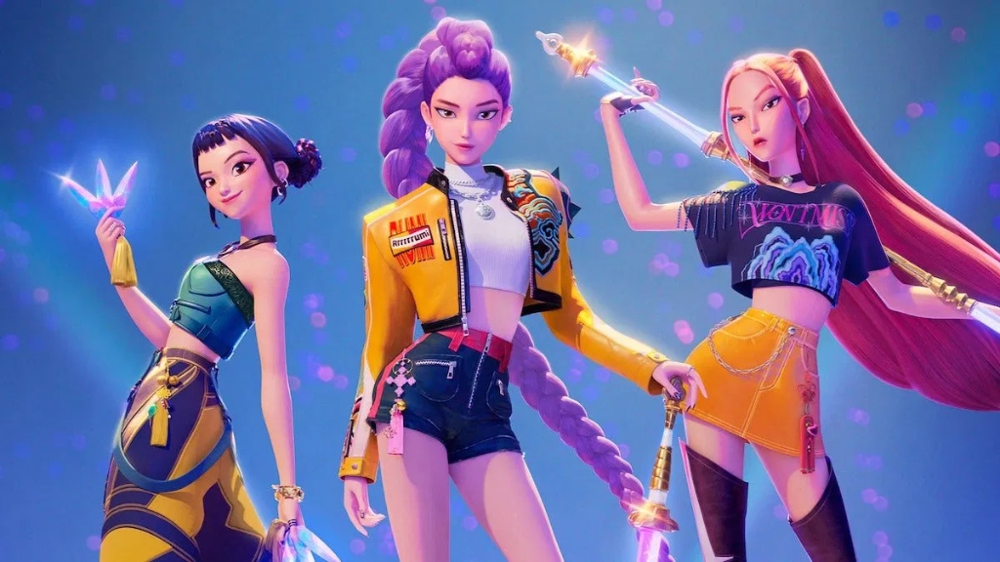
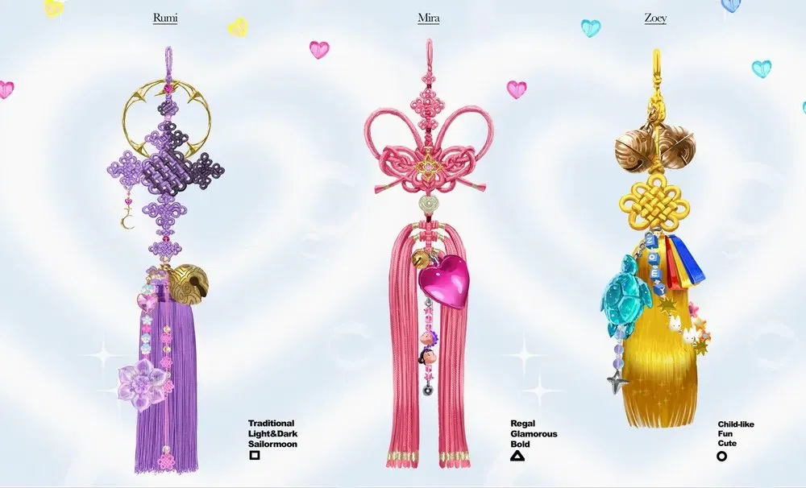

OH MY GAT
TRADITION REWRITTEN
고루함을 벗고 역동성을 입다
Reclaiming the Korean Image
한국의 문화가 전 세계의 주목을 받는 지금, 지루하고 고루한 고정관념에 갇혀 있던 전통 요소를 현대적 감각으로 탈환한 두 가지 선도적 사례를 분석합니다.
전통은 박물관의 유리창 너머에 박제된 정적인 유산이 아닙니다. 오늘날의 아티스트들은 이를 탈취하여 생동하는 무대 위에서 가장 역동적인 미학으로 재창조해 내고 있습니다. 본 전시는 애니메이션과 스트릿 댄스라는 전혀 다른 현대 매체 속에서 살아 숨 쉬는 우리 문화의 뿌리를 조명합니다.
두 개의 시선: 현대적 번역
범접
CORE ELEMENTS
- 부채춤 — 부채가 만들어내는 극적인 물결과 유기적인 형태 변화를 파도처럼 형상화
- 한복 — 전통 복식의 깃과 소매 자락이 흩날리는 동적 실루엣을 무용의 궤적에 최적화
- 굿 — 한풀이와 주술적 도구(신칼 등)를 사용하여 무대를 신성한 의식의 현장으로 변모
- 탈춤 — 묵은 억압을 씻어내는 날것 그대로의 본능적인 몸짓과 얼굴의 이면성을 풍자
- 장단 — 꽹과리와 북 등 국악 타악의 파열음을 메탈릭 힙합 루프와 충돌시킨 비트
케이팝데몬헌터스
CORE ELEMENTS
- 자개 — 다채롭게 반짝이는 나전 빛깔을 현대적 네온 홀로그램 비주얼로 전이
- 산수화 — 수묵화 특유의 여백의 미와 유려한 붓놀림을 디지털 배경 디자인에 도입
- 달 — 밤의 숲과 사냥을 주관하는 신비로운 동양적 영적 주술의 에너지를 암시
- 십장생 — 영원히 늙지 않는 불사(不死)의 동식물 도안을 메인 테마 요소로 가공
- 전통 문양 — 한옥의 창살 및 기하학적 격자 패턴을 연출 곳곳의 UI 요소로 재해석
전통이 작동하는 방식
이미지 탈환 (Image Reclamation)
과거의 전통 요소가 단지 '낡고 지루한 것'으로 치부되던 고정관념에서 벗어났습니다. 자개, 산수화, 굿 등 고착화되었던 전통 기법들을 네온 비주얼과 압도적인 100인 군무 등 현대적 감각의 외형과 융합하여 주체적이고 힙한 미적 자산으로 완전히 탈환(Reclaim)해 냈습니다.
매체의 다양성 (Diversity of Media)
전통의 재해석은 특정 장르에 머물지 않습니다. 넷플릭스 2D 애니메이션이라는 '디지털 영상 미디어'와 스트릿 우먼 파이터 2라는 '라이브 댄스 퍼포먼스'라는 전혀 다른 두 축을 통해 시너지를 내며, 전 세계 대중들에게 다양한 채널을 통해 입체적이고 다각적인 영감을 불어넣고 있습니다.
글로벌 공명 (Global Resonance)
가장 한국적인 것이 가장 세계적인 것임을 증명합니다. 단순한 에스닉(Ethnic) 요소의 나열을 넘어, 굿의 격동적인 샤머니즘적 분출과 자개의 영롱한 퓨처리즘적 광택은 전 세계 누구나 시각적·청각적 카타르시스를 느낄 수 있는 보편적 예술 언어로 확장되어 큰 울림을 전달합니다.
전통의 탈환
드라마로 시작된 한국의 문화가 전 세계의 주목을 받는 지금, 지루하고 고루한 고정관념에 갇혀 있던 전통 요소를 디자인과 몸짓을 통해 현대적 감각으로 '탈환'한 두 가지 선도적 사례를 분석해 전통의 현대적 공존 가능성을 모색하고자 한다.
범접
서브컬처 스트릿 댄서들이 대규모 군무를 통해 한국 무속 신앙(굿)의 신성한 에너지와 전통 연희의 풍자적 해학을 압도적인 무대 예술로 정립해 낸 퍼포먼스적 이정표입니다.
케이팝데몬헌터스
글로벌 스트리밍 플랫폼에서 시도된 퓨전 동양 판타지로, 한국 전통 미술과 공예 요소가 네온 컬러의 일러스트 및 미래적 그래픽 디자인과 어떻게 공존할 수 있는지를 보여줍니다.
범접 (Beomjeob)
스트릿 댄서 특유의 독창적이고 파격적인 에너지로 한국적 요소를 무대 위에 녹여냈습니다.
미션
스우파2에서 범접이 받은 미션은 춤으로 자신의 나라를 표현하는 것이었다.
의상 — 음양의 언어
조선 시대 남성 복식의 상징인 갓을 스트릿 스타일로 변형해 의상으로 활용했다. 태극기에서 착안해 음양의 색상인 흰, 검은 의상을 착용하고, 태극기의 태극 문양인 빨간색과 파란색은 부채를 사용해 색감을 더했다. 검은 실루엣과 얼굴이 보이지 않는 연출로 악몽과 저승사자라는 무형의 주제를 잘 드러냈다.
춤 — 부채춤과 풍물놀이
한국 전통 무용인 부채춤을 차용해 대칭 구조, 꽃 모양, 부채를 이용한 곡선 흐름, 집단 군무 등을 현대화했다. 풍물놀이의 요소로 상모돌리기와 원형이 강조되는 동선을 사용해 한국의 풍물놀이를 잘 녹여냈다.
노래 — 굿판의 분위기
초반에 음산한 분위기를 지나 후반으로 갈수록 점점 고조되는 음악은 한국의 '굿판'에서 나타나는 분위기와 유사하다.
케이팝데몬헌터스 (KDH)
글로벌 트렌드 속에서 한국의 정체성을 가장 효과적이고 세련되게 시각화한 그래픽/디자인 아트를 선보입니다.

작품 소개
케이팝데몬헌터스는 3명의 주인공이 악령을 물리치는 아이돌이라는 중심 소재로 진정한 나를 찾아가는 여정을 그린 영화이다.

무기 — 전통의 형상
루미의 무기는 사인검으로, 사령을 다스리는 호랑이 4방위를 상징하는 조선왕조의 벽사용 도검이다. 조이의 무기는 무당이 굿을 할 때 사용하는 대신칼에서 따온 소형 칼이다. 미라의 무기는 가야 때 월도를 모티브로 제작되었다. 고대 헌터들의 무기는 석장, 쌍검, 각궁으로 각각 깊은 역사와 전통적 맥락을 담고 있다.

노리개 — 방울과 매듭
헌트릭스에게 달려있는 노리개는 무당의 상징인 방울들을 달아 악령을 내쫓는 헌터들에게 잘 어울리는 장신구가 되었다. 루미, 미라, 조이의 노리개에는 도래 매듭, 가락지 매듭, 국화 매듭 등 다양한 전통 매듭이 사용되었다.
결론 (Conclusion)
전통을 재해석하고 현대 예술로 탈환해 낸 두 시선의 접점입니다.
범접 vs 케데헌 — 전통을 대하는 두 가지 방식
케데헌은 조선시대 무기, 단청 무대 등 유형의 전통적 요소를 시각적으로 활용한 반면, 범접은 저승사자라는 무형의 주제를 바탕으로 시청각적으로 한국을 표현했다. 하나는 형태로, 하나는 감각으로 전통을 현대에 되살렸다.
"Tradition does not fade. It transforms."
전통은 사라지지 않는다. 변주될 뿐이다.
문화콘텐츠기초 · 이름있는조 / 황도영 이동재 김서연 이화영 현나경